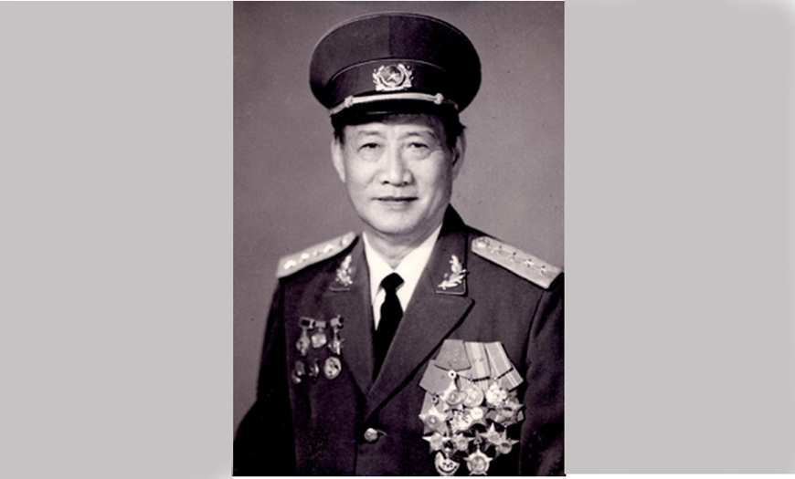
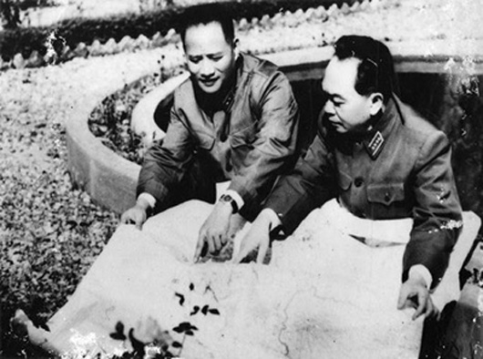

Hoàng Văn Thái là một trong 34 đội viên đầu tiên của Đội Việt Nam Tuyên truyền giải phóng quân, được phân công phụ trách tình báo và kế hoạch tác chiến và cũng là Tổng Tham mưu trưởng đầu tiên của Quân đội nhân dân (QĐND) Việt Nam.
Đại tướng Hoàng Văn Thái được đánh giá là một trong những vị tướng có ảnh hưởng quan trọng nhất trong việc hình thành và phát triển của QĐND Việt Nam, người có công lớn trong hai cuộc kháng chiến chống Pháp và chống Mỹ của dân tộc.
“Ông là vị tướng trận mạc, sống nhân hậu, tình nghĩa được Quân đội ta và nhân dân ta mến phục”, đó là đánh giá của Đại tướng Võ Nguyên Giáp về tướng Hoàng Văn Thái.

Tên thật là Hoàng Văn Xiêm, sinh năm 1915 trong một gia đình yêu nước ở xã Tây An, huyện Tiền Hải, tỉnh Thái Bình, đồng chí Hoàng Văn Thái sớm giác ngộ, tham gia hoạt động cách mạng (1936) và trở thành một Đảng viên Đảng Cộng sản Việt Nam lúc 23 tuổi. Năm 1940 ông bị thực dân Pháp bắt giam. Từ năm 1941-1945, trải qua cương vị chỉ huy Đội cứu quốc quân Bắc Sơn, Trưởng đoàn học viên Việt Nam tại Trường quân sự Liễu Châu (Trung Quốc), phụ trách công tác tình báo, tác chiến trong Đội Việt Nam Tuyên truyền Giải phóng quân, Hiệu trưởng Trường Quân chính kháng Nhật…, đồng chí Hoàng Văn Thái luôn kiên định, tuyệt đối trung thành với sự nghiệp cách mạng, có năng lực tổ chức, giàu trí sáng tạo, hoàn thành xuất sắc mọi nhiệm vụ được giao.
Cách mạng Tháng Tám thành công, ngày 7-9-1945, ông được Chủ tịch Hồ Chí Minh giao thành lập Bộ Tổng Tham mưu và là Tổng Tham mưu trưởng đầu tiên của QĐND Việt Nam, khi đó ông mới 30 tuổi. Trên cương vị này, ông đã góp phần quan trọng vào việc xây dựng cơ quan tham mưu chiến lược của quân đội, ngành tham mưu toàn quân phát triển và dần hoàn thiện giúp Bộ Quốc phòng chỉ đạo tác chiến và xây dựng lực lượng ngày một trưởng thành. Những ý kiến chỉ đạo của ông đã góp phần quan trọng vào chiến thắng Hà Nội “60 ngày đêm khói lửa”.
Ngày 20-1-1948, Hoàng Văn Thái nhận quân hàm Thiếu tướng trong đợt phong quân hàm cấp tướng đầu tiên. Ông làm Tham mưu trưởng và là Đảng ủy viên các chiến dịch lớn có ý nghĩa lịch sử đối với sự trưởng thành, chiến thắng của quân đội như Chiến dịch Biên giới (1950), Trung du, Hoàng Hoa Thám, Hà Nam Ninh, Hòa Bình, Tây Bắc, Thượng Lào.
Trong Chiến dịch Điện Biên Phủ (13-3 đến 7-5-1954), bên cạnh Tổng Tư lệnh Võ Nguyên Giáp, Hoàng Văn Thái làm Tham mưu trưởng chiến dịch, trực tiếp chỉ huy công tác tham mưu - tác chiến tại mặt trận, góp phần quan trọng vào chiến thắng Điện Biên Phủ. Năm 1958, ông là Chủ nhiệm Tổng cục Quân huấn, kiêm Chủ nhiệm Ủy ban Thể dục Thể thao nhà nước. Năm 1959, ông được phong hàm Trung tướng; từ 1961-1963 học tại Học viện Quân sự Cấp cao Bắc Kinh (Trung Quốc).

Trong cuộc kháng chiến chống Mỹ, khi Mỹ đưa quân vào miền Nam, ông được giao nhiệm vụ vào truyền đạt Nghị quyết 12 của Trung ương Đảng (khóa III) cho lãnh đạo, chỉ huy miền Nam (2-1966), sau đó được chỉ định làm quyền Bí thư Khu ủy 5, Tư lệnh kiêm Chính ủy Quân khu 5 (7-1966).
Hoàng Văn Thái đã cùng các đồng chí khác lãnh đạo, chỉ đạo cuộc Tổng tiến công và nổi dậy Xuân Mậu Thân 1968, đánh bại cuộc Hành quân Toàn thắng (1-1971), các cuộc hành quân Chenla I, Chenla II, Nguyễn Huệ, chiến dịch tiến công tổng hợp 1972. Sau Hiệp định Paris (1-1973), ông làm Phó tổng Tham mưu trưởng thứ nhất, phụ trách công tác tác chiến và chi viện chiến trường cùng Lê Trọng Tấn làm kế hoạch và chỉ đạo tổ trung tâm hoàn thành kế hoạch giải phóng miền Nam 1975-1976. Ông được phong hàm Thượng tướng năm 1974.
Hoàng Văn Thái cùng Bộ Tổng Tham mưu chỉ đạo việc xây dựng kế hoạch tác chiến chiến lược, thực hiện các ý định, chủ trương của Bộ Chính trị, tạo thế và lực cho ta nắm thời cơ giành thắng lợi trong cuộc Tổng tiến công và nổi dậy Xuân 1975.
Trong Chiến dịch Hồ Chí Minh, ông là Phó chủ tịch Thứ nhất Hội đồng chi viện cho chiến trường, Phó tổng Tham mưu trưởng thứ nhất. Trên thực tế ông đã đảm nhiệm vai trò Tổng Tham mưu trưởng lần thứ ba, thay cho đồng chí Văn Tiến Dũng bí mật vào Nam để trực tiếp chỉ huy chiến trường.
Từ 1974-1986, đồng chí Hoàng Văn Thái làm Thứ trưởng Bộ Quốc phòng kiêm Phó tổng Tham mưu trưởng (1974-1981), Ủy viên Thường vụ Quân ủy Trung ương.
Năm 1980, ông được phong quân hàm Đại tướng.
Đại tướng Hoàng Văn Thái mất ngày 2-7-1986. Tên của ông được đặt cho nhiều đường, phố trong cả nước.
Đại tướng Hoàng Văn Thái là vị tướng trận mạc. Với kiến thức và tài năng hiếm có, đồng chí đã trở thành nhà chỉ đạo, chỉ huy quân sự xuất sắc, nhà tham mưu lão luyện của quân đội. Đồng chí rất coi trọng nhân tố chính trị, yếu tố nhân dân, là người tổ chức, chỉ huy đầu tiên của Bộ Tổng Tham mưu - cơ quan chiến lược của QĐND Việt Nam, xứng đáng là “người học trò ưu tú của Chủ tịch Hồ Chí Minh”...
Hoàng Văn Thái được bầu vào Ủy viên Ban Chấp hành Trung ương Đảng Cộng sản Việt Nam khóa III-V; đại biểu Quốc hội khóa VII, được Nhà nước tặng nhiều huân chương cao quý: Sao vàng (truy tặng năm 2007); Hồ Chí Minh; Quân công hạng Nhất, Nhì; Kháng chiến hạng Nhất; Chiến thắng hạng Nhất; Huy chương Quân kỳ Quyết thắng.
Đại tướng Hoàng Văn Thái – Tham mưu trưởng Chiến dịch Điện Biên Phủ
Tháng 1-1948, trong đợt phong quân hàm cấp tướng đầu tiên của Quân đội, đồng chí Hoàng Văn Thái được phong Thiếu tướng. Trong chiến cuộc Đông Xuân 1953 - 1954, Thiếu tướng Văn Tiến Dũng, Đại đoàn trưởng kiêm Chính ủy Đại đoàn 320, được triệu về Việt Bắc giữ chức vụ Tổng Tham mưu trưởng Quân đội nhân dân Việt Nam. Thiếu tướng Hoàng Văn Thái được phân công nhiệm vụ lên Điện Biên thực hiện vai trò Tham mưu trưởng trong chiến dịch quan trọng mang mật danh Trần Đình.
Tại Điện Biên Phủ, ông đã phối hợp tốt với cố vấn Trung Quốc, cùng đưa ra và thực hiện những quyết sách quan trọng của Bộ chỉ huy Chiến dịch và Đại tướng Võ Nguyên Giáp từ việc chuyển phương châm tác chiến, cho đến công tác chuẩn bị, hậu cần, từng trận đánh. Ông là Tham mưu trưởng đắc lực bên cạnh Đại tướng Võ Nguyên Giáp với tài năng và sự cống hiến của mình. Sau này ông tiếp tục tham gia Chiến dịch Hồ Chí Minh, đến năm 1980 được phong quân hàm Đại tướng.
Trong Chiến dịch lịch sử Điện Biên Phủ, với vai trò Tham mưu trưởng Chiến dịch, ngày 26-11-1953, ông dẫn đầu đoàn cán bộ của Bộ tư lệnh tiền phương lên đường đi Tây Bắc nghiên cứu thực địa.
Ngày 30-11, đoàn đến Nà Sản, ông chủ trương cho đoàn dừng lại một ngày để nghiên cứu tập đoàn cứ điểm mà người Pháp vừa rút bỏ vào tháng 8 dù trận công kích của Quân đội nhân dân Việt Nam đã không đạt mục đích. Chính những nghiên cứu thực địa ban đầu này đã giúp chuẩn bị kinh nghiệm rất nhiều cho trận đánh sau này. Ngày 6-12, đoàn đến Chỉ huy sở đầu tiên tại hang Thẩm Púa và bắt tay vào việc nghiên cứu đề ra cách đánh. Sáng 12-1-1954, đoàn Bộ tư lệnh Chiến dịch của Đại tướng Võ Nguyên Giáp cũng đến nơi.
Như hầu hết các chỉ huy Việt Nam và cố vấn Trung Quốc khi đó, Tham mưu trưởng Hoàng Văn Thái cũng ủng hộ phương châm “đánh nhanh, thắng nhanh”, dù ông đã băn khoăn: “Làm thế nào để đưa pháo vào trận địa khi ta chủ trương đánh sớm, đánh nhanh mà chưa kịp làm đường cho xe kéo pháo? Làm thế nào để hạn chế tác dụng của máy bay, pháo binh, giảm bớt thương vong khi ta đánh liên tục cả ban ngày?”. Tuy nhiên, là một người lính, ông đã ra lệnh cho các đơn vị rút về vị trí tập kết theo đúng chỉ thị của Tổng tư lệnh, một quyết định mà lịch sử chứng minh sự đúng đắn của nó khi tạo nên một chiến thắng chấn động thế giới.
Sau này, ông đã viết về thời khắc lịch sử này: “Nắm vững chức năng, nhiệm vụ, kiên quyết phát huy tinh thần cách mạng tiến công trong những điều kiện khó khăn, phức tạp và khẩn trương nhất, luôn luôn vì thắng lợi của toàn quân mà ra sức vươn lên trong thực tế chiến đấu và xây dựng, đáp ứng yêu cầu chỉ đạo chỉ huy của trên... đó là những yếu tố chủ quan quyết định thành công của Bộ Tổng Tham mưu trong chiến cuộc Đông Xuân 1953 - 1954 và nói riêng trong Chiến dịch lịch sử Điện Biên Phủ”...